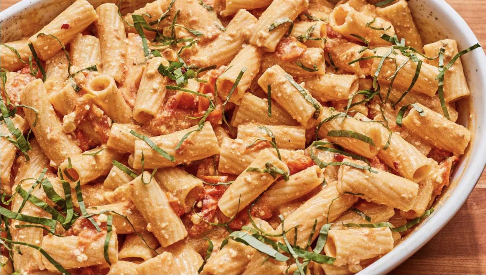
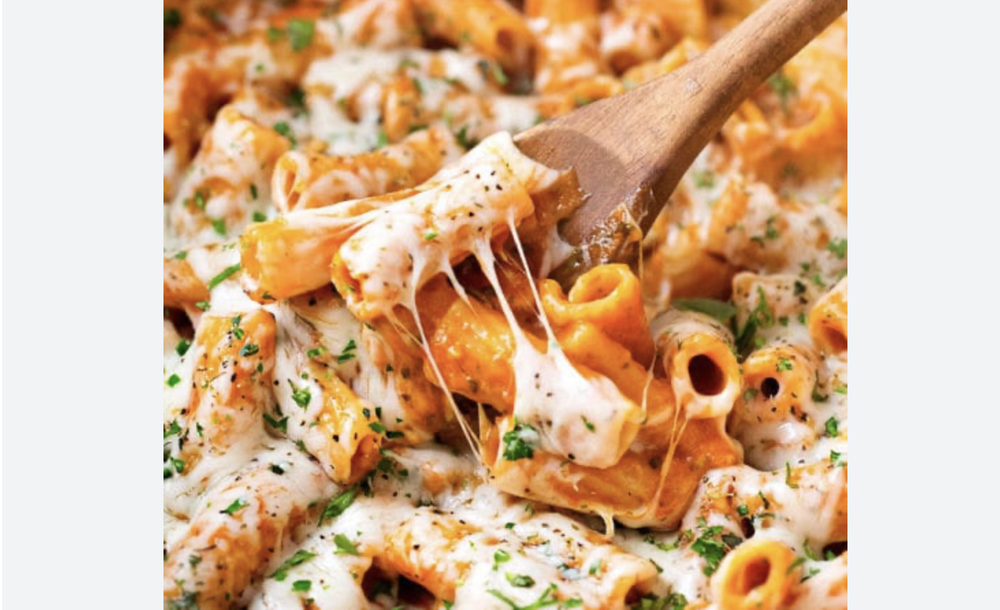

Chocolate recipe

Awesome chocolate chips

Delicious chocolate cookies
Chocolate is a food made from cacao beans. It is used in many desserts like pudding, cakes, candy, ice cream, and Easter eggs. It can be in a solid form like a candy bar or it can be in a liquid form like hot chocolate. Commercial chocolate has sugar and sometimes milk added.
Pasta
feta pasta
parmesan pasta
pasta, any of several starchy food preparations (pasta alimentaria) frequently associated with Italian cuisine and made from semolina, the granular product obtained from the endosperm of a type of wheat called durum, and containing a large proportion of gluten (elastic protein).
Burger

Cheese burger

Bacon burger
A burger is a patty of ground beef grilled and placed between two halves of a bun. Slices of raw onion, lettuce, bacon, mayonnaise, and other ingredients add flavor. Burgers are considered an American food but are popular around the world. In Japan, teriyaki burgers are popular.